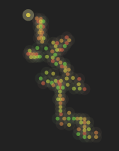
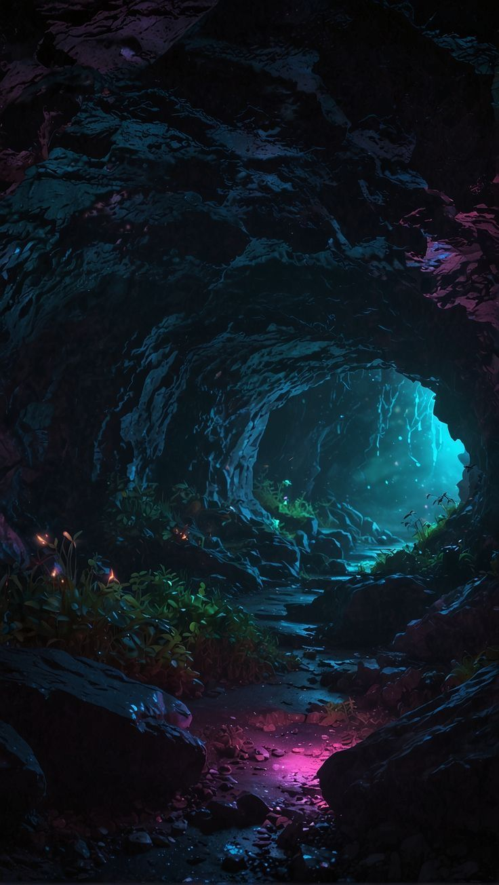
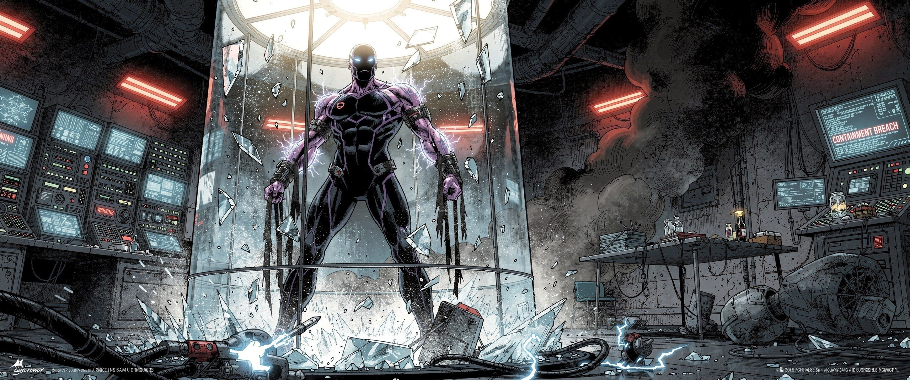
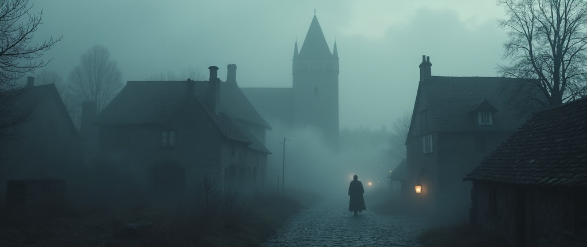
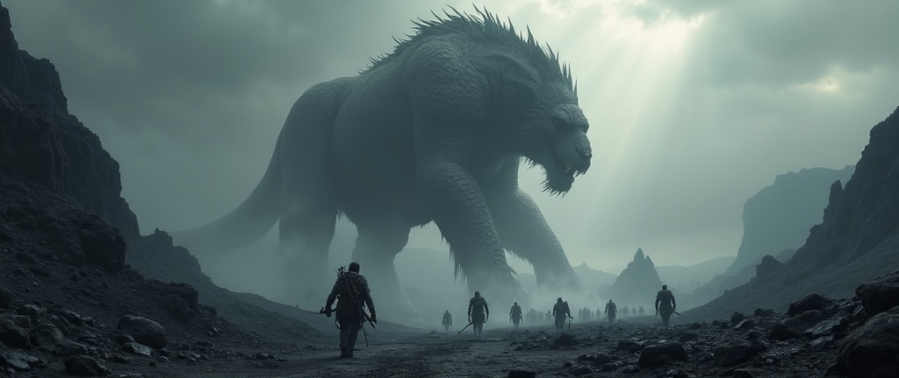

Player Choice
Designing choices as part of the player's experience rather than simply using them as dialogue branches.
NARRATIVE & QUEST DESIGN · KAJaani UAS · FINLAND
A collection of narrative design exercises developed during my Erasmus exchange in Finland, exploring interactive storytelling, branching structures, player choice, and narrative tools through Twine.
During my Erasmus exchange at Kajaani University of Applied Sciences in Finland, I took a class focused on Narrative & Quest Design. The course gave me the opportunity to explore interactive storytelling as a design problem rather than simply writing a linear story.
One of the first exercises was designed to teach us the fundamentals of Twine. Instead of treating the exercise purely as a technical introduction, I used it as an opportunity to adapt a story I was reading at the time into an interactive experience.
I took the role of a guild master and translated the story into a branching interactive structure, using Twine to experiment with passages, choices and player-directed progression.
LEARNING THE TOOL
The first exercise focused on understanding how Twine could transform written narrative into an interactive experience.
I used a story I was reading at the time as the foundation and adapted it into an interactive experience where the player takes the role of a guild master.
The resulting piece grew to approximately 115 passages, giving me practical experience with managing a larger branching narrative structure rather than only creating a small linear prototype.
PLAY THE INTERACTIVE STORY →
Twine Story Map, approximately 115 passages connected through the interactive narrative.
The interactive story was presented for peer review, allowing other students to experience the narrative and identify areas where the structure or presentation created confusion.
I used the feedback to identify where the branching structure was unclear and where narrative progression could be communicated more effectively.
I then revised the passages and structure based on the feedback, treating the narrative as a design system that could be tested and improved rather than a finished piece of writing.
Narrative design benefits from the same iterative process as gameplay design — build, test, observe, revise.

FINAL CLASS PROJECT
The second project challenged us to create a narrative around the theme Kajo something that shines in Finnish.
Rather than treating the theme as only a visual prompt, I approached it as a narrative foundation, using the idea of something that shines to shape the story, its meaning and the player's interpretation.
Twine allowed me to rapidly prototype the narrative structure and experiment with how player decisions could reveal information, change context and influence the progression of the story.
Designing choices as part of the player's experience rather than simply using them as dialogue branches.
Exploring how information and narrative state can be tracked behind the scenes to influence later outcomes.
Allowing the player to influence the narrative without always explicitly showing the consequences of their decisions.
Using context, information and the player's progression through the experience to communicate story without relying entirely on exposition.
Previously, I used Figma to plan and lay out narrative structures visually.
Twine allowed me to move from static planning into an immediately playable narrative structure.
Playtesting made it easier to identify confusing branches and revise the narrative flow.
I particularly enjoyed Twine because it shortened the distance between narrative idea and playable prototype. It is a tool I intend to return to for future narrative and quest design work.
GAME DESIGN DOCUMENT
Alongside the interactive prototype, I documented the project's narrative direction, structure and design decisions.
The GDD provides a deeper look at the thinking behind the project and demonstrates how I move from a narrative concept into a structured design document.
VIEW THE GDD →Branches, variables and player decisions need to work together as intentionally as gameplay mechanics.
Watching another person navigate a narrative can reveal confusion and pacing problems that are easy to miss when designing alone.
Twine made it possible to test narrative ideas before investing heavily in production.
Moving from Figma to Twine changed the way I thought about narrative structure because the result could immediately be experienced rather than only viewed.
INTERACTIVE NARRATIVE · QUEST DESIGN · PROTOTYPING
Exploring AI-driven interactive storytelling by creating, playing, and analysing adventures in a new form of entertainment.
During my time in Finland, I became particularly interested in AI text RPGs, interactive stories where an AI remembers player choices and dynamically responds to them.
What started as simply playing these experiences quickly became an opportunity to analyse them from a narrative designer's perspective. I wanted to understand what makes this new form of entertainment engaging, where its limitations appear, and what possibilities it could offer for interactive storytelling.
I eventually began creating my own worlds and adventures, using the platform not only as a player, but as a creator. This became a valuable experiment in understanding how players can interact with stories that are not completely predetermined.
An AI text RPG that remembers your choices, solo or co-op, in any world you can imagine.
— The experience that sparked the experimentA selection of interactive adventures I created while exploring AI-driven storytelling.

You were never born. You were created. A secret government program genetically engineered you into a living biological weapon, designed for one purpose: to be controlled and deployed. But you escaped.
PLAY ADVENTURE ↗
You have no body. No voice. No name. You are something older than language, a hunger that lives in the spaces between memory. A village. Twelve people. And you.
PLAY ADVENTURE ↗You are just another adventurer. At least, that's what the Guild tells you. You're not a hero. Not chosen. Just a mid-level nobody hoping to earn a coin, build a reputation, and climb the ladder.
PLAY ADVENTURE ↗
Humans are not the top of the food chain. Massive creatures roam the wilds, beasts large enough to shatter forests and crush stone. Civilization survives only in isolated fortifications.
PLAY ADVENTURE ↗Creating these adventures changed how I looked at AI-generated storytelling. Rather than treating the AI as simply a writing tool, I became interested in the relationship between author, system, and player.
AI-driven narratives can respond to player decisions in ways that traditional branching structures cannot always anticipate. This creates a strong feeling of freedom, but also raises questions about how much meaningful agency the player actually has.
Giving an AI freedom to generate content can also introduce inconsistencies. Characters, world rules, tone and previous events can sometimes drift away from the original narrative intention.
Some of the most interesting moments came from situations I had not explicitly written. The system created unexpected combinations of player actions, characters and circumstances.
The experience also showed me that more freedom does not automatically mean a better story. Narrative design still requires structure, constraints, character motivation and meaningful consequences.
What I found most rewarding was being able to build worlds and then immediately experience them as a player. The process made me think differently about authorship, player agency and the boundaries between authored and emergent narrative.
The experiment also gave me another tool for prototyping narrative ideas. I enjoyed the platform enough that I intend to continue exploring AI-driven interactive storytelling as a possible part of my future narrative design work.